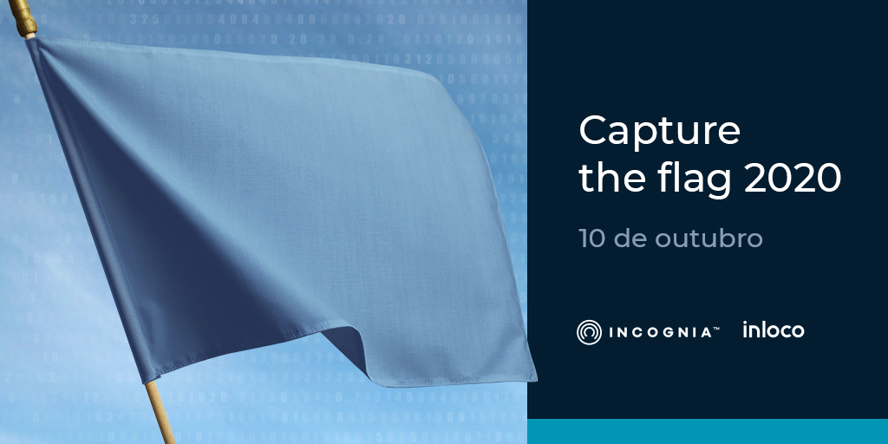

Este ano teremos, durante o SBSeg 2020, um desafio do tipo CTF (Capture The Flag). A competição será online e realizada pela nossa parceira, InLoco.
Data da realização: 10 de Outubro de 2020 (sabádo)
Horário do evento:9h até 17h
Inscrições pelo site http://sbseg.sbc.org.br/2020/ (inscritos no SBSeg podem participar gratuitamente)
Premiações para os melhores competidores.
Terá certificado de participação (carga horária de 6 horas) para quem ficar até o fim.
Interessados em participar deverão responder este formulário.
Teremos desafios relacionados a:
Linux Skills
Crypto
Miscellaneous
Forensics
WEB
SRV(Server Exploitation)
Além disso, esses desafios estarão distribuídos em diferentes níveis de dificuldade: Noob, Script Kiddie, CTF Player, Mr. Robot and God
Durante todo o evento, será oferecida mentoria com o objetivo de sanar as dúvidas dos competidores.
Dúvidas ou mais informações, mande um email para ctf.sbseg@gmail.com.
Regulamento
A competição é no estilo Capture the flag (CTF): Com desafios cujo objetivo é encontrar as flags de resposta
Cada desafio pode ter mais de uma flag, isto será especificado em seu enunciado;
Cada flag será no formato Try_Pwn_Me{s0m3th1ng_h3r3}, contando como flag a string completa, não apenas o que encontra-se dentro das chaves;
A competição será exclusivamente individual;
Apenas inscritos no SBSeg podem participar da competição;
A competição será realizada remotamente;
Toda comunicação oficial será realizada através do Discord (https://discord.gg/TqSdfmF);
A Plataforma de submissão das flags será anunciada na apresentação de introdução do evento, com início às 9h do dia 10/10/2020;
O evento terá, ao todo, 8h de duração, das 9h às 17h;
Um resumo com as principais informações para os participantes estará disponível após a apresentação;
Os competidores podem começar a participar do CTF a qualquer momento após o início da competição;
Cada participante deve utilizar um sistema operacional dotado de software para máquinas Virtuais (Preferencialmente VirtualBox rodando o sistema Kali Linux);
Alguns desafios necessitam que o participante realize a importação de um arquivo .ova, é importante que o competidor certifique que sua escolha de software de virtualização suporta esta funcionalidade;
Os participantes podem fazer pesquisas sobre os conteúdos abordados nos desafios;
Haverão instrutores presentes durante todo o evento para auxiliar os jogadores com possíveis dúvidas técnicas ou relacionadas aos desafios;
Os participantes poderão pedir auxilio apenas aos instrutores, sendo vetada a comunicação com os demais participantes a respeito dos desafios;
É proibido qualquer tipo de ataques a infraestrutura e a outros competidores (exemplos: DoS, bruteforce, etc…);
Constatada qualquer irregularidade que a organização julgue como vantagem ilícita, o competidor será desclassificado;
Serão declarado(a)s vencedores(as) os(as) três participantes que atingiram maior pontuação ao final do evento;
Em caso de empate, a plataforma organiza o ranking pelo horário de resolução, beneficiando aquele(a) que primeiro atingir a maior pontuação;
Em caso de parada ou problema de acesso, acionar imediatamente um membro da equipe organizadora para auxílio;
Os organizadores se reservam ao direito de desclassificar o competidor que desrespeite as regras da competição;
Ao se inscrever e se apresentar no dia da Competição, o participante aceita e concorda com estas regras;
A organização do SBSeg pode alterar estas regras a qualquer momento e é soberana na decisão de conflitos ou dúvidas.
Premiação
A premiação será composta de uma placa de desenvolvimento Dstike Wifi Deauther Oled Mini Esp8266 para cada uma das três maiores pontuações e alguns brindes sortidos (adesivos, camisetas, etc...);
A organização do evento entrará em contato com os(as) participantes de maior pontuação através do email fornecido no formulário de inscrição para combinar o envio dos prêmios. Sendo assim, será acrescido o tempo de envio do pacote desde a finalização do evento até o recebimento por parte do(a) participante.
O que é um CTF?
É uma competição, na área de segurança da informação, composta por desafios onde, os participantes testam seus conhecimentos e habilidades.
Como será o formato?
O evento começará com uma palestra voltada para ambientação dos competidores. Esta palestra terá duração de aproximadamente 1 hora e contemplará os principais tópicos abordados no desafio. A ideia é que seja útil para o participante sem experiência neste tipo de evento.
Eu nunca participei de um CTF, posso competir?
Claro que sim. O evento contará com uma palestra para ambientação e mentores para te ajudar.
A competição será individual ou coletiva?
Individual.
É necessário estar inscrito no SBSeg para poder participar do CTF?
É necessário sim. Isso possui algumas vantagens. Você poderá participar da conferência (palestras e minicursos) e também poderá ser membro da Sociedade Brasileira de Computação (SBC) por alguns meses.
Coordenação do CTF do SBSeg 2020
Pedro Carlos da S. Lara - CEFET-RJ
Michelle Wangham - UNIVALI
Coordenação Geral do SBSeg 2020
Fábio Borges de Oliveira - LNCC
Raphael Machado - Inmetro e UFF
Coordenação CESeg
Altair Santin - PUCPR
Michele Nogueira - UPFR
Sociedade Brasileira de Computação (SBC)
Laboratório Nacional de Computação Científica (LNCC)
Instituto Nacional de Metrologia, Qualidade e Tecnologia (Inmetro)
Instituto de Computação (IC) da Universidade Federal Fluminense (UFF)
O SBSeg 2020 é uma iniciativa da Sociedade Brasileira de Computação (SBC).